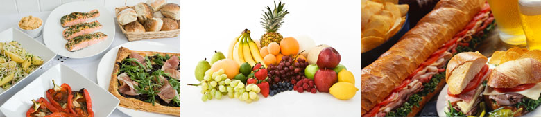
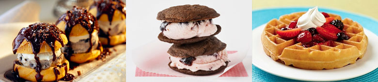

Taste of the Maldives
-

Fresh Seafood Platter
Seafood Enjoy the catch of the day, grilled to perfection with local spices and served with a side of tropical salad.
-

Traditional Maldivian Breakfast
Breakfast Try Mas Huni - a delicious mixture of tuna, onion, coconut, and chili, served with Roshi flatbread.
-

Tropical Fruit Medley
Dessert A refreshing selection of seasonal tropical fruits including papaya, mango, and passion fruit.